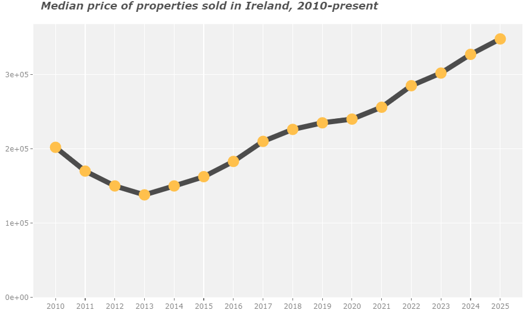
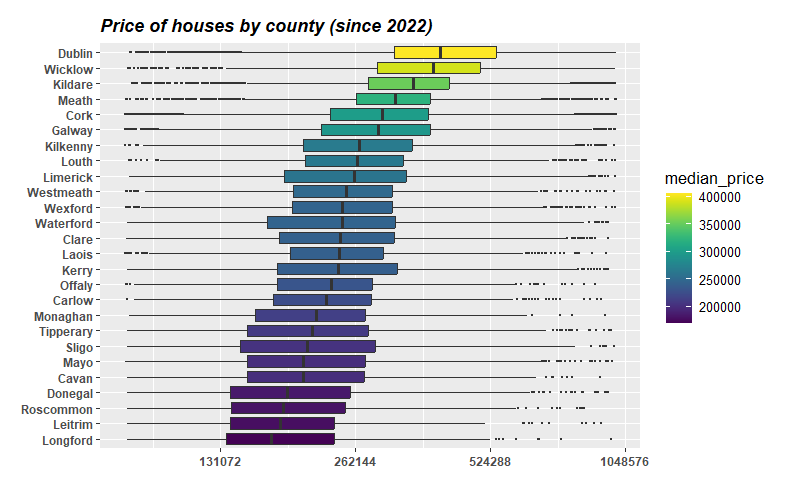
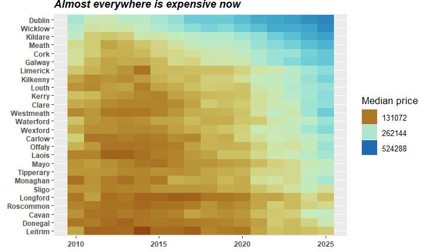

Flipping hell: The absolute hack of the data in Ireland’s property price register.

Since bottoming out in 2013, after The Crash, the price of houses in Ireland has just kept on rising.


Rural counties were slower to become expensive, but in 2025 a house in Westmeath is as expensive as one in Dublin in 2017.
Introduction
The property price index is a valuable resource which lists the price of every property sold since 2010 in (the twenty-six counties of) Ireland, but unfortunately, the database was designed by people who ‘know the price of everything but the value of nothing’. Allegedly, the data has been uploaded one entry at a time, by solicitors’ secretaries, many of whom express their humanity through misspelling and irregular punctuation, while several express their Irishness with the cúpla focail. This valuable dataset is thus a bit like being given a big five-bed house for a free holiday but having to wade through the previous tenants’ filth.
My role here is to take this unkempt raw data and flip it, scrubbing it goodo, and presenting it back to you, the reader, as an inhabitable space which, I hope, you can explore with some pleasure.
Reading in the data
The data is stored here on the Property Price Register website, and from there we can download subgroups of the data, grouped by county, year or month. I want it all, so I’ve written a purrr function to read in each year’s property sales and then bind them into a single dataframe (using map_dfr). I’ve saved all columns as strings since it’s much faster and they all need cleaning inanyways. Finally I’ve had to encode them as latin1 to avoid this bug, although I”m still not happy as it’s not reading the Euro symbol €.
Here’s the data contained in the first and last rows of the data, transposed for readability
property_raw[c(1,nrow(property_raw)),] %>%t()
[,1]
Date of Sale (dd/mm/yyyy) "01/01/2010"
Address "5 Braemor Drive, Churchtown, Co.Dublin"
County "Dublin"
Eircode NA
Price (\u0080) "\u0080343,000.00"
Not Full Market Price "No"
VAT Exclusive "No"
Description of Property "Second-Hand Dwelling house /Apartment"
Property Size Description NA
[,2]
Date of Sale (dd/mm/yyyy) "01/08/2025"
Address "TULLIGBEG, KILLORGLIN, CO KERRY"
County "Kerry"
Eircode "V93P3C9"
Price (\u0080) "\u0080250,000.00"
Not Full Market Price "No"
VAT Exclusive "No"
Description of Property "Second-Hand Dwelling house /Apartment"
Property Size Description NA
What is contained in the data?
Each row in the dataset represents the sale of a single property. The sale date is included along with the sale price and the address. It is thus possible to see how much your neighbours paid for their gaff or indeed any property sold in Ireland since 2010. There is a useful column for the county and eircodes have been added to the data in recent years. There is some secondary data about the nature of the sale, such as whether the property was sold at the market price or not, whether VAT was charged, whether the house was new or second-hand. A column is included for the size of the property, roughly equating to tiny (<38sq. m), large (> 125 sq.m) or anything in-between.
The very first thing to do is to clean the column names which were either designed for humans to read on a spreadsheet, or, perhaps more likely, conceived as a set of instructions for those entering sale details into the database. I want them in a format suitable for coding in R. No capitals, spaces or excess descriptive baggage. First off, I will work create a copy of the property_raw dataframe so that I can start again every time I make an error, without having to read in the data again.
[1] "Date of Sale (dd/mm/yyyy)" "Address"
[3] "County" "Eircode"
[5] "Price (\u0080)" "Not Full Market Price"
[7] "VAT Exclusive" "Description of Property"
[9] "Property Size Description"
Let’s look at each column in turn, and, in doing so, I will clean them up, before plotting the cleaner version of the data. The date needs to be convered back to a data form, the year is essential, and I’m including quarter, month and day (of the week) because we might find them useful later, and it might just be interesting to see which days and months are the most common for sales and which are the most expensive.
Dates and sales
So the simplest thing to look at is how many properties have been sold each year since they started collecting the data.
It’s pretty clear that there’s a massive difference between the recession of 2010-13 and the sudden return to form in 2014, followed by five more years of increased sales before Covid. Unsurprisingly, sales dropped in 2020, but they didn’t nosedive like, say, the airline industry, and 2021 shows a return to 2019 levels.
At the time of writing (November 2022), it is not immediately obvious if sales will increase from 2021, but, if we break down sales by month, as in the plot below, then that seems likely, as each month has been consistently a wee bit ahead thus far. This resolution makes it possible to see inside the grim years of the Covid pandemic. Understandably there were reduced sales in April 2020 (2647 sales vs 4562 in 2019), May (2592 v 4940), June (3083 v 4356), but things re-normalized by October (5576 v 5579) and November (5379 v 5264), while the end-of-year rush in the ‘meaningful’ month of December 2020 (7474 sales) was a good deal larger than December 2019 (6798).
Properties sold by year
One last thing to note, before I get too far into the weeds, is that there hasn’t been a bounceback from the “missing” 10,000 sales in 2020. Instead, the 2021 and 2022 sales totals look like a natural progression from the years leading up to 2020.
It’s also worth a quick sconce at quarterly data in recent years. I’ve kept 2019 as a control group, and its numbers are similar to 2021 (12-14-16-18k versus 13-13-15-18k), while 2022 is looking similar at the time of writing (13-15-16k). Only 2020 shows a notable slump, with a massive drop in Q2 and only partial recovery in Q3r. Yet Q4 2020 shows identical numbers to 2019 and 2021 (18k apiece). However, what we might see is a differential in sales of new and second-hand homes as construction of new houses stopped for long periods due to Covid, whereas second-hand houses-to-be already basically existed.
New homes versus old
Before we look at the frightening cost of a gaff in this country, I’m going to clean up the “Property Description” column, which is the one that tells you if the gaff is new or old. This will give us an introduction to the absolute state of this dataset:
group count
1 Second-Hand Dwelling house /Apartment 609317
2 New Dwelling house /Apartment 127141
3 Teach/Árasán Cónaithe Atháimhe 44
4 Teach/Árasán Cónaithe Nua 3
5 Teach/?ras?n C?naithe Nua 1
The label ‘New Dwelling house /Apartment’ is not computer-friendly and I’ll change it to ‘New’ (with a cheeky capital because it’ll save me manually relabelling axes later at little cos). Similarly, ‘Second-Hand Dwelling house /Apartment’ will become ‘Old’ an underdescriptive label that at least contrasts nicely against ‘New’. Mar sin féin, new_or_old$count[3:nrow(new_or_old)] %>% sum properties have had their description listed in Irish, so we need to clean those up, and basically translate them back into English. There have been some issues importing the fadas (accents) but we can still group them using ad-hoc regexes.
group count percentage
1 Old 609361 82.74
2 New 127145 17.26
It is not yet the time to concern ourselves with the fact that only new_or_old_cleaned$count[2] new properties ((100*new_or_old_cleaned$count[2]/nrow(property)) %>% round(1) %>% paste0(.,'%') of them) have been sold in a country which has grown by just over half a million people since 2010.
Eircodes
Recent years have contained eircode data which is a great addition, but unfortunately that column has been added at the expense of an postcode column which, while sparsely populated and confined solely to Dublin, will remain a useful bit of data when we are trying to find which towns and villages belong in which part of Dublin.
Before we examine eircode data, we need to convert the ‘date’ column from a string to an actual date variable, and also extract the months, weeks, day and day of the week, as this may be valuable data for modelling later.